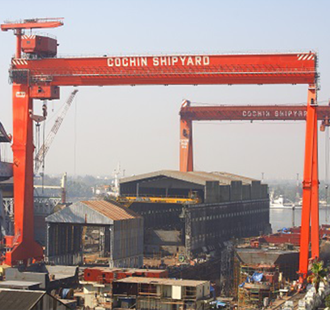
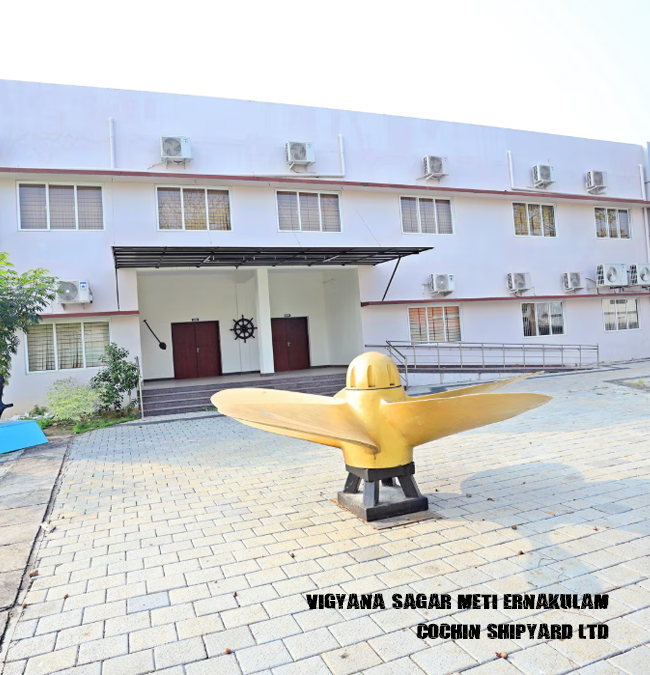
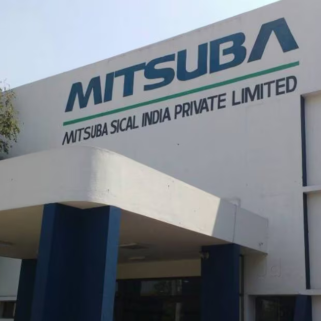
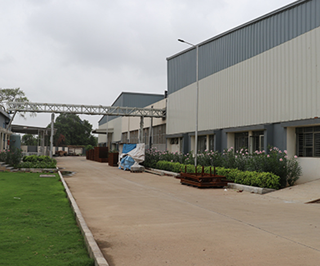
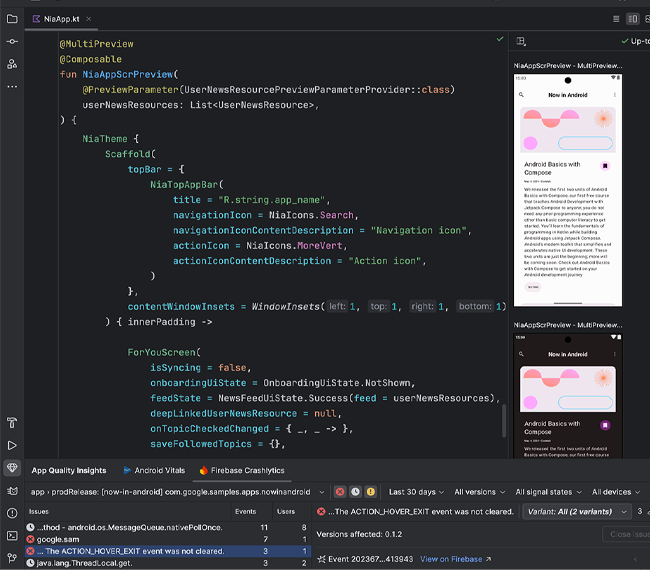

RECENT EXPERIENCES

1. Catamaran Ferry boat project
1. Contributed to the creation of procurement documents
1. Encompass the realm of the Machinery Outfit within the Ship Design Department, overseeing its intricate operations.
ADVANCED_DEGREE_MECHANICAL_ENGINEER_TRAINEE
MAY_2022-DECEMBER_2022
MACHINERY OUTFIT DESIGN
PROJECTS... (CONFIDENTIAL)
1. Catamaran Ferry boat project
2. NDS 137m sea shuttle/Sam skip.
3.vessels carrying 500 passengers.
RESPONSIBILIES... (CONFIDENTIAL)
1. Contributed to the creation of procurement documents
2. Participated in the creation of initial technical specifications
3. Assisted in preparing pipe fittings and pipe drawings (2D and 3D)
DUTIES... (CONFIDENTIAL)
1. Encompass the realm of the Machinery Outfit within the Ship Design Department, overseeing its intricate operations.
2. Ascertain the essential drawings and equipment, devices, pipes, and sundry apparatuses required for the endeavor.
3. Devise meticulous details for tenders and procurements, ensuring all elements are duly prepared.
4. Examine and resolve the arrangements of pipes and machinery through the adept use of Tribon 3D modelling software.
5. Select the most fitting machinery and compile the requisite Purchase Order Memorandum.
6. Procure repair drawings from the Manufacturing Department and formulate apt resolutions thereto.
7. Archive every document in both digital and tangible forms, preserving them for posterity.
8. Engage in telephonic discourse for services and inquiries, fostering clear communication.
9. Conduct a thorough inspection of the vessel upon the project's completion, verifying its integrity and readiness.
COCHIN_SHIPYARD_PVT_LTD ERNAKULAM,KERALA,INDIA

1. cargo vessel,
1. Contributed to the creation of procurement documents for systems in ship
1. Encompass the realm of the Machinery Outfit within the Ship Design Department, overseeing its intricate operations.
GRADUATE_DEGREE_APPRENTICE_TRAINEE_MECHANICAL
MARCH_2020-MAY_2021
MECHINERY OUTFIT DESIGN & MARINE_ENGINEERING_INSTITUTE
PROJECTS... (CONFIDENTIAL)
1. cargo vessel,
2. 500- and 1200-passenger vessel
3. KMRL
4. LECTURER
RESPONSIBILIES... (CONFIDENTIAL)
1. Contributed to the creation of procurement documents for systems in ship
2. Participated in the creation of initial technical specifications
3. Assisted in preparing pipe fittings and pipe drawings (2D and 3D)
DUTIES... (CONFIDENTIAL)
1. Encompass the realm of the Machinery Outfit within the Ship Design Department, overseeing its intricate operations.
2. Ascertain the essential drawings and equipment, devices, pipes, and sundry apparatuses required for the endeavor.
3. Devise meticulous details for tenders and procurements, ensuring all elements are duly prepared.
4. Examine and resolve the arrangements of pipes and machinery through the adept use of Tribon 3D modelling software.
5. Select the most fitting machinery and compile the requisite Purchase Order Material.
6. Procure repair drawings from the Manufacturing Department and formulate apt resolutions thereto.
7. Archive every document in both digital and tangible forms, preserving them for posterity.
8. Engage in telephonic discourse for services and inquiries, fostering clear communication.
9. Conduct a thorough inspection of the vessel upon the project's completion, verifying its integrity and readiness.
COCHIN_SHIPYARD_PVT_LTD ERNAKULAM,KERALA,INDIA
SHIPYARD Working Projects..... CLICK HERE MORE....

1. STATOR_MOTOR
1. Contributed to the creation of documents and inspect the product and machine.
1. I meticulously evaluated the quality of the materials, readied them with care for dispatch, and received those that had been delivered.
GRADUATE_ENGINEER
SEPTEMBER_2020-MARCH_2021
QUALITY_DEPARTMENT
PROJECTS... (CONFIDENTIAL)
1. STATOR_MOTOR
2. FLY_WHEEL
3.FUEL_INJECTOR
RESPONSIBILIES... (CONFIDENTIAL)
1. Contributed to the creation of documents and inspect the product and machine.
2. Participated in the checking of technical specifications
3. Assisted in checking, resolve and submit the documents
DUTIES... (CONFIDENTIAL)
1. I meticulously evaluated the quality of the materials, readied them with care for dispatch, and received those that had been delivered.
2. With unwavering diligence, I scrutinized the plans, specifications, and blueprints to grasp the full essence of the product's demands.
3. I discerned and addressed issues pertaining to quality while steadfastly adhering to all appointed deadlines.
4. Moreover, I imparted essential training to the quality assurance team.
5. Checking daily machine parts , tools used for manufacturing department and assembly department
6. Evaluate and report the product dimensions and status of product at the end of the dayt
MITSUBA_INDIA_PVT_LTD THIRUVALLUR,TAMIL NADU, INDIA
MITSUBA Working Projects..... CLICK HERE MORE....

1. Boiler pressure vessel
1. CNC Machine operator
1. Operate CNC machine
MECHANICAL_SUPERVISOR
JUNE_2019-AUGUST_2020
MANUFACTURING DEPT.
PROJECTS... (CONFIDENTIAL)
1. Boiler pressure vessel
2. pipe line structure
RESPONSIBILIES... (CONFIDENTIAL)
1. CNC Machine operator
2. Inspect machine and quality checking
3. Submitt daily product report
DUTIES... (CONFIDENTIAL)
1. Operate CNC machine
2. check and insert proper machine tool
3. check and submit the report of product
HORIZON ENGINEER AND CONTACTORS GUJARAT,INDIA
HORIZON Working Projects..... CLICK HERE MORE....

1. foods-rest-api
1. Web designing (Front-end and back-end development)
1. Develope the user interface for an app, website, or any other interactive medium.
ANDROID DEVELOPER
6 MONTHS
IT DEPARTMENT
PROJECTS...
1. foods-rest-api
2. profile-rest-api
3. students-rest-api
4. travel-rest-api
RESPONSIBILIES...
1. Web designing (Front-end and back-end development)
2. App development (Front-end and back-end development)
3. UI/UX Designing
DUTIES...
1. Develope the user interface for an app, website, or any other interactive medium.
2. Developed and executed software programs.
3. Test and submit the daily report
STUDYBOARD ERNAKULAM,KERALA,INDIA
STUDYBOARD Working Projects..... CLICK HERE MORE....
HOME CLICK HERE....